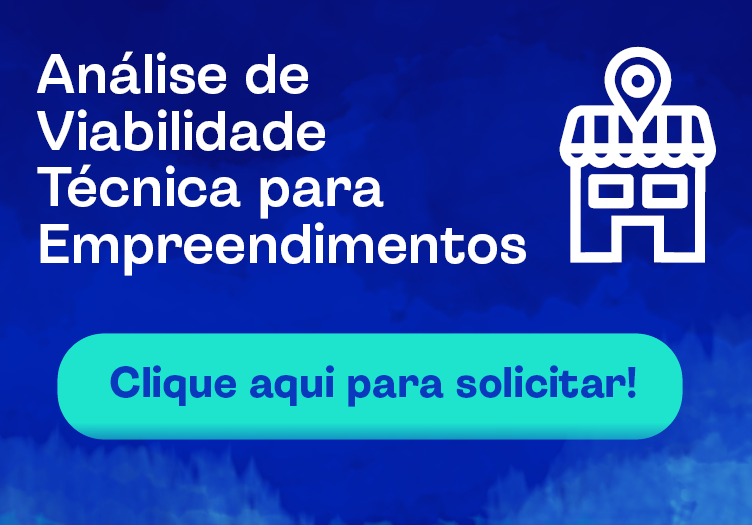

SANEAMENTO E INFORMAÇÃO
Informações que aproximam pessoas e serviços.
Um espaço organizado para conhecer conteúdos sobre abastecimento de água, saneamento e canais de atendimento.
Explorar informações →
SOBRE A COMPANHIA
Quem somos
A Companhia Riograndense de Saneamento (Corsan) foi fundada em 28 de março de 1966 com a missão de realizar estudos, projetos, construção, operação, ampliação e gestão dos serviços públicos de abastecimento de água potável e esgotamento sanitário no Rio Grande do Sul.
Em dezembro de 2022, a empresa foi adquirida pela Aegea Saneamento em leilão de privatização. A gestão passou a ser exercida pela Aegea em 7 de julho de 2023. Líder em saneamento privado no Brasil, a Aegea está presente em mais de 860 cidades de 15 estados e atende mais de 38 milhões de pessoas.
Com a assinatura do contrato de concessão dos serviços de saneamento, válido até 2058, foram anunciados investimentos de R$ 15 bilhões até 2033. Os recursos são destinados à operação, à modernização e à ampliação da infraestrutura de abastecimento de água, além da expansão dos sistemas de coleta e tratamento de esgoto.
Fonte: Corsan
CONTEÚDO EM DESTAQUE
Ver canais de atendimento →
Informações
Abastecimento e saneamento
Conteúdos para entender melhor os serviços, a infraestrutura e a importância do saneamento.
Ler mais →Conta e fatura
Informações gerais sobre a conta e caminhos para acessar os canais adequados.
Ler mais →Serviços e orientações
Orientações e informações úteis para quem busca atendimento e serviços relacionados.
Ler mais →ATUALIZAÇÕES
Notícias
Estudantes conhecem de perto o tratamento da água em visita técnica
21/08/2026 · 16h54min
Ler mais →Investimentos reforçam o abastecimento de água e a infraestrutura
21/08/2026 · 14h51min
Ler mais →Alunos recebem orientações sobre saúde, saneamento e meio ambiente
21/08/2026 · 13h35min
Ler mais →Unidade móvel amplia o atendimento em comunidades
21/08/2026 · 12h39min
Ler mais →
CANAIS
Canais de relacionamento
CALL CENTER 24 HORAS
0800 646 6444REDES SOCIAIS
WHATSAPP CORSAN
Atendimento pelo número
0800 646 6444APP CORSAN
Consulte as lojas de aplicativos para obter informações sobre disponibilidade.
TUDO FÁCIL
Confira informações sobre unidades e formas de atendimento.